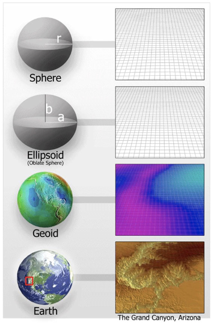
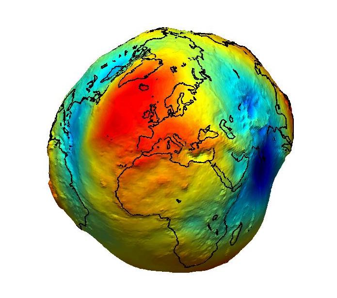
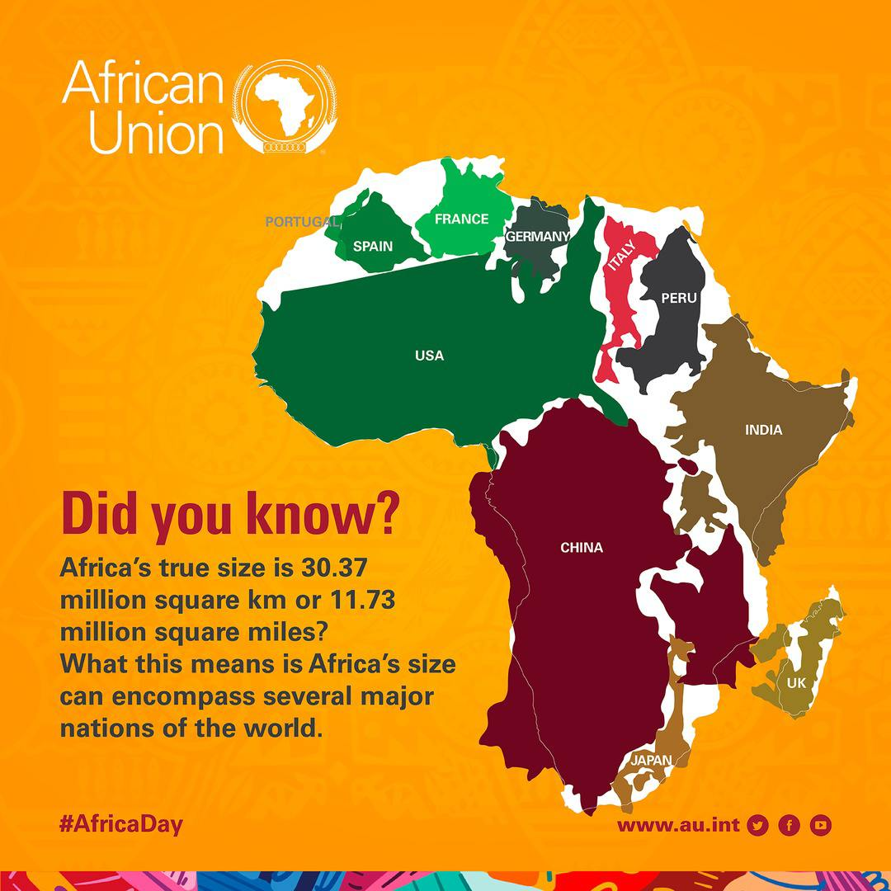
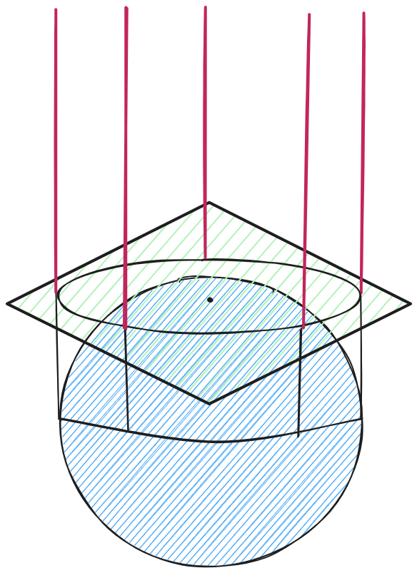
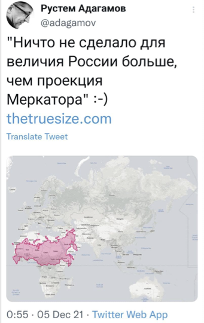
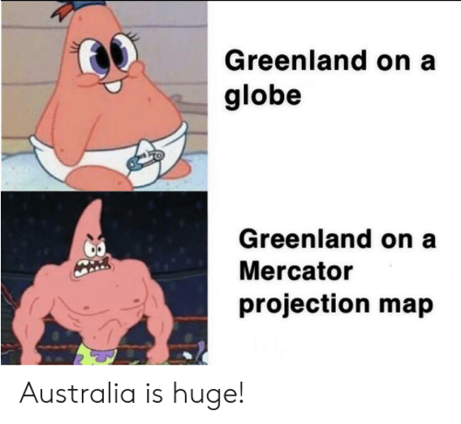
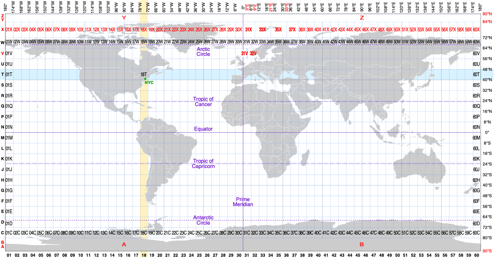

Геоинформатика и геоинформационные системы. Лекция 3
Любая система координат в ГИС состоит из нескольких компонентов:
картографическая проекция, в которую входят:
датум или эллипсоид
поверхность, на которую проецируется изображение
оси, их направление;
начало системы координат;
единицы измерения.
Система координат базируется на картографической проекции, которая определяет используемый эллипсоид (в иностранной литературе часто называемый датумом) и способ проецирования поверхности Земли на плоскость (используемую поверхность относимости и расположение центра проецирования). К полученному изображению Земли на плоскости добавляется начало системы координат и ее оси.
Картографическая проекция - это математически определенный способ отображения поверхности Земли (либо другого небесного тела) на плоскость.
Основная суть проекций связана с тем, что фигуру небесного тела заменяют на другую, которую легко развернуть на плоскость.

Важно
Картографические проекции могут искажать размеры, форму и углы между линиями. Невозможно получить проекцию без искажений двух из трех величин. Как правило, подбор проекции осуществляется, исходя из того, какой из этих параметров важнее всего сохранить неизменным, пожертвовав остальными двумя.
Африканский союз призвал отказаться от проекции Меркатора, чтобы увеличить размеры Африки на современных географических картах
💬Может показаться, что это просто карта, но на самом деле это не так. Проекция Меркатора создает ложное впечатление, будто Африка — „маргинальный“ континент, несмотря на то что это второй по площади континент в мире с населением более 1 млрд человек💬, — приводит слова Хаддади агентство Reuters.
Хаддади подчеркнула, что использование подобных карт формирует негативные стереотипы об Африке, которые влияют на СМИ, образование и политику.

Классификация по виду проецирующей поверхности:

Классификация по ориентированию относительно оси вращения:
нормальные или прямые (в случае с азимутальными проекциями - полярные) - ось вращения Земли совпадает с осью вращения поверхности проецирования (для азимутальных проекций - точка касания находится на одном из полюсов);
поперечные - ось вращения поверхности проецирования находится в плоскости экватора и перпедикулярна оси вращения Земли (для азимутальных проекций - точка касания находится на линии экватора);
косые - ось вращения повеохности проецирования расположена под произвольным углом по отношению к оси вращения Земли (для азимутальных проекций - расположение точки касания на поверхности Земли произвольно).
Из книги: Elements of map projections with application on map and chart conctruction


В настоящее время используется единая классификация систем координат в ГИС – реестр EPSG, изначально созданный European petroleum survey group и получивший от нее свою аббревиатуру.
Кроме него также могут использоваться данные других реестров систем координат, например, одноименный реестр компании ESRI.
Дополнительно
Официальный сайт реестра - https://epsg.org/home.html
(Неофициальный) сайт реестра -
EPSG:4326
WGS 84 - WGS84 - World Geodetic System 1984, used in GPS
EPSG:3857
WGS 84 / Pseudo-Mercator - Spherical Mercator, Google Maps, OpenStreetMap, Bing, ArcGIS, ESRI
ESRI:102025
Asia North Albers Equal Area Conic
Однозначного ответа, увы, здесь нет.
В первую очередь, необходимо понять, какой параметр объектов наиболее важно сохранить: размеры, длины или углы? Кроме того, следует учитывать расположение картографируемой области, так как для разных типов проекций искажения будут наименее выраженными в определенных областях.
Если ориентироваться на минимизацию искажений, то можно использовать методику, предложенную в Атласе картографический проекций для крупных регионов России.
Если картографируемый участок находится в экваториальной зоне:
равновеликая коническая для азиатской части Северного полушария (ESRI:102026)
равновеликая коническая проекция Альберса для азиатской части Северного полушария (ESRI:102025)
нормальная цилиндрическая равновеликая проекция (ESRI:54034)
равновеликая коническая для азиатской части Северного полушария (ESRI:102026)
равновеликая коническая проекция Альберса для азиатской части Северного полушария (ESRI:102025)
поперечная азимутальная равновеликая проекция (ESRI:53032)
Если участок исследования расположен в средних широтах (применимо как к северному, так и южному полушарию):
вытянут вдоль параллелей, то рекомендуется использование прямой конической проекции для соответствующего полушария (северного или южного)
компактной формы, то рекомендуется использование нормальной конической проекции или азимутальной проекции с точкой касания в центре участка
вытянут в произвольном направлении (под углом к параллелям и меридианам), то рекомендуется использование поперечной или косой цилиндрической проекции (расположение оси вращения здесь выбирается так, чтобы минимизировать искажения на участке)
Если участок расположен в приполярной области (применимо к обоим полушариям):
вытянут вдоль параллелей или вытянут в произвольном направлении, то рекомендуется использовать полярную азимутальную проекцию
полярная азимутальная проекция Ламберта (EPSG:17300)
полярная равнопромежуточная проекция для Северного полюса (ESRI:102016)
полярная равновеликая проекция Ламберта для Северного полюса (ESRI:102017)
имеет компактную форму, то рекомендуется использование полярной или косой азимутальной проекции (в зависимости от конкретного расположения участка для минимизации искажений рекомендуется располагать точку касания по центру отображаемого участка)
полярная азимутальная проекция Ламберта (EPSG:17300)
полярная равнопромежуточная проекция для Северного полюса (ESRI:102016)
полярная равновеликая проекция Ламберта для Северного полюса (ESRI:102017)
Для маленьких территорий (например, территория города) лучше брать системы координат UTM (Universal Transverse Mercator - универсальная поперечная проекция Меркатора) – по сути аналог системы координат Гаусса-Крюгера. Особенно, если вы хотите выполнять какие-либо измерения на вашей карте.
Projection wizard https://projectionwizard.org/
World map generator https://www.worldmapgenerator.com/en/wizard/step/projection/
Map projection explorer https://www.geo-projections.com/
Compare map projections https://map-projections.net/singleview.php
Map projections https://bella-mir.github.io/proj-guesser/#/
Есть два основных формата описания параметров систем координат:
WKT (well known text)
proj
В QGIS каждый добавленный слой и набор данных имеет свою собственную систему координат, а также есть система координат проекта, в которой отрисовываются данные на экране и выполняются некоторые расчеты. Эти системы координат могут (а в некоторых случаях для расчетов - должны) совпадать, а могут быть различны и могут изменяться независимо друг от друга.
Важное уведомление
Взаимная независимость систем координат позволяет работать одновременно с данными в разных системах, при этом отображая их в той системе координат, которая более удобна пользователю.
Работа с системами координат в QGIS имеет несколько вариантов:
перепроецирование слоев (для растровых слоев иногда называемое деформацией) - пересчет слоя из одной системы координат в другую; - назначение системы координат
присвоение системы координат слоям, в которых ее нет или задана некорректно;
создание пользовательских систем координат - внесение параметров нестандартных систем координат в каталог программы;
перепроецирование на лету - изменение системы координат проекта, то есть системы координат, в первую очередь используемой для отображения данных на экране, которое не затрагивает системы координат отдельных слоев.
Запорожченко А.В. Картографические проекции и методика их выбора для создания карт различных типов https://gistoolkit.ru/download/doc/projections.pdf
Мозжерин В.В. Практикум по картографии. Математическая основа карт (учебно-методическое пособие). Казань: Изд-во КГУ, 2005. – 99 с. https://kpfu.ru/docs/F1435536248/mozzherinmetodichkaofcartography_61.pdf
Иванов А.Г., Загребин Г.И. Атлас картографических проекций на крупные регионы Российской федерации: учебно-наглядное издание. – М.: МИИГАиК, 2012. – 19 с.: ил. https://kartfak.ru/2023/03/14/картографические-проекции/
Балтыжакова Т.И. Геоинформатика и геоинформационные системы: лекции